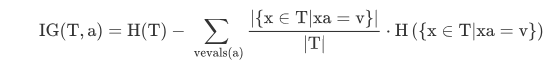
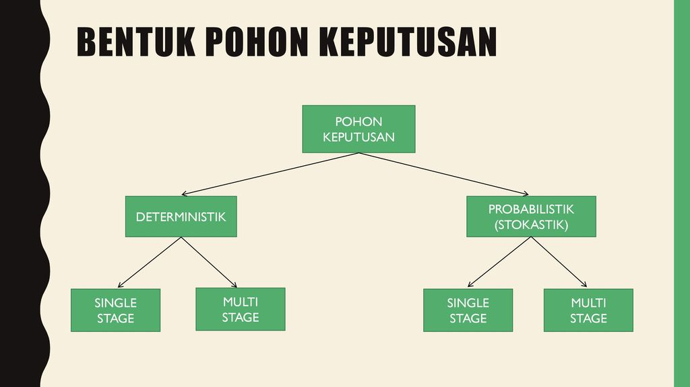

Materi
Decision Tree Pohon Keputusan¶
Pengertian Pohon Keputusan¶
Pohon yang dalam analisis pemecahan masalah pengambilan keputusan adalah pemetaan mengenai alternatif-alternatif pemecahan masalah yang dapat diambil dari masalah tersebut. Pohon tersebut juga memperlihatkan faktor-faktor kemungkinan/probablitas yang akan mempengaruhi alternatif-alternatif keputusan tersebut, disertai dengan estimasi hasil akhir yang akan didapat bila kita mengambil alternatif keputusan tersebut.

Manfaat Pohon Keputusan¶
Pohon keputusan adalah salah satu metode klasifikasi yang paling populer karena mudah untuk diinterpretasi oleh manusia. Pohon keputusan adalah model prediksi menggunakan struktur pohon atau struktur berhirarki. Konsep dari pohon keputusan adalah mengubah data menjadi pohon keputusan dan aturan-aturan keputusan. Manfaat utama dari penggunaan pohon keputusan adalah kemampuannya untuk mem-break down proses pengambilan keputusan yang kompleks menjadi lebih simpel sehingga pengambil keputusan akan lebih menginterpretasikan solusi dari permasalahan. Pohon Keputusan juga berguna untuk mengeksplorasi data, menemukan hubungan tersembunyi antara sejumlah calon variabel input dengan sebuah variabel target. Pohon keputusan memadukan antara eksplorasi data dan pemodelan, sehingga sangat bagus sebagai langkah awal dalam proses pemodelan bahkan ketika dijadikan sebagai model akhir dari beberapa teknik lain. Sering terjadi tawar menawar antara keakuratan model dengan transparansi model. Dalam beberapa aplikasi, akurasi dari sebuah klasifikasi atau prediksi adalah satu-satunya hal yang ditonjolkan, misalnya sebuah perusahaan direct mail membuat sebuah model yang akurat untuk memprediksi anggota mana yang berpotensi untuk merespon permintaan, tanpa memperhatikan bagaimana atau mengapa model tersebut bekerja.
Kelebihan Pohon Keputusan¶
Kelebihan dari metode pohon keputusan adalah:
- Daerah pengambilan keputusan yang sebelumnya kompleks dan sangat global, dapat diubah menjadi lebih simpel dan spesifik.
- Eliminasi perhitungan-perhitungan yang tidak diperlukan, karena ketika menggunakan metode pohon keputusan maka sample diuji hanya berdasarkan kriteria atau kelas tertentu
- Fleksibel untuk memilih fitur dari internal node yang berbeda, fitur yang terpilih akan membedakan suatu kriteria dibandingkan kriteria yang lain dalam node yang sama. Kefleksibelan metode pohon keputusan ini meningkatkan kualitas keputusan yang dihasilkan jika dibandingkan ketika menggunakan metode penghitungan satu tahap yang lebih konvensional
- Dalam analisis multivariat, dengan kriteria dan kelas yang jumlahnya sangat banyak, seorang penguji biasanya perlu untuk mengestimasikan baik itu distribusi dimensi tinggi ataupun parameter tertentu dari distribusi kelas tersebut. Metode pohon keputusan dapat menghindari munculnya permasalahan ini dengan menggunakan criteria yang jumlahnya lebih sedikit pada setiap node internal tanpa banyak mengurangi kualitas keputusan yang dihasilkan.
Kekurangan Pohon Keputusan¶
- Terjadi overlap terutama ketika kelas-kelas dan criteria yang digunakan jumlahnya sangat banyak. Hal tersebut juga dapat menyebabkan meningkatnya waktu pengambilan keputusan dan jumlah memori yang diperlukan.
- Pengakumulasian jumlah eror dari setiap tingkat dalam sebuah pohon keputusan yang besar.
- Kesulitan dalam mendesain pohon keputusan yang optimal.
- Hasil kualitas keputusan yang didapatkan dari metode pohon keputusan sangat tergantung pada bagaimana pohon tersebut didesain.
Model Pohon Keputusan¶
Pohon keputusan adalah model prediksi menggunakan struktur pohon atau struktur berhirarki.

Disini setiap percabangan menyatakan kondisi yang harus dipenuhi dan tiap ujung pohon menyatakan kelas data. Contoh di Gambar 1 adalah identifikasi pembeli komputer,dari pohon keputusan tersebut diketahui bahwa salah satu kelompok yang potensial membeli komputer adalah orang yang berusia di bawah 30 tahun dan juga pelajar. Setelah sebuah pohon keputusan dibangun maka dapat digunakan untuk mengklasifikasikan record yang belum ada kelasnya. Dimulai dari node root, menggunakan tes terhadap atribut dari record yang belum ada kelasnya tersebut lalu mengikuti cabang yang sesuai dengan hasil dari tes tersebut, yang akan membawa kepada internal node (node yang memiliki satu cabang masuk dan dua atau lebih cabang yang keluar), dengan cara harus melakukan tes lagi terhadap atribut atau node daun. Record yang kelasnya tidak diketahui kemudian diberikan kelas yang sesuai dengan kelas yang ada pada node daun. Pada pohon keputusan setiap simpul daun menandai label kelas. Proses dalam pohon keputusan yaitu mengubah bentuk data (tabel) menjadi model pohon (tree) kemudian mengubah model pohon tersebut menjadi aturan (rule).
program¶
Import package yang diperlukan
import pandas as pd
from sklearn.tree import DecisionTreeClassifier
from sklearn.model_selection import train_test_split
from sklearn import metrics
from sklearn.externals.six import StringIO
from IPython.display import Image
from sklearn.tree import export_graphviz
import pydotplusLoad data
col_names = ['pregnant', 'glucose', 'bp', 'skin', 'insulin', 'bmi', 'pedigree', 'age', 'label']
# load dataset
pima = pd.read_csv("diabetes1.csv", header=None, names=col_names)
Seleksi Fitur
feature_cols = ['pregnant', 'insulin', 'bmi', 'age','glucose','bp','pedigree']
X = pima[feature_cols] # fitur
y = pima.label # targetSplit Data
#split data : 30% data test, 70% data train
X_train, X_test, y_train, y_test = train_test_split(X, y, test_size=0.3, random_state=1)
Membuat model pohon keputusan
clf = DecisionTreeClassifier(criterion="entropy", max_depth=3)
# untuk train pohon keputusan
clf = clf.fit(X_train,y_train)
#untuk prediksi data yg diuji
y_pred = clf.predict(X_test)
#menampilkan akurasi
print("Accuracy:",metrics.accuracy_score(y_test, y_pred))
visualisasi pohon keputusan
dot_data = StringIO()
export_graphviz(clf, out_file=dot_data,
filled=True, rounded=True,
special_characters=True, feature_names = feature_cols,class_names=['0','1'])
graph = pydotplus.graph_from_dot_data(dot_data.getvalue())
graph.write_png('diabetes.png')
Image(graph.create_png())https://fairuzelsaid.wordpress.com/2009/11/24/data-mining-konsep-pohon-keputusan/